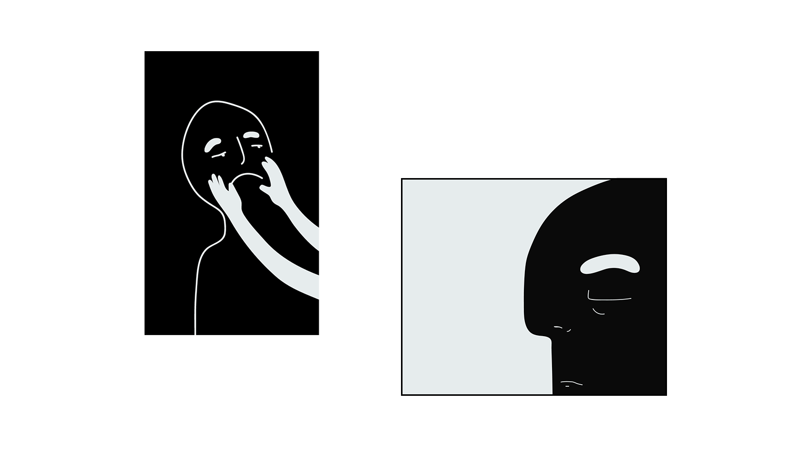
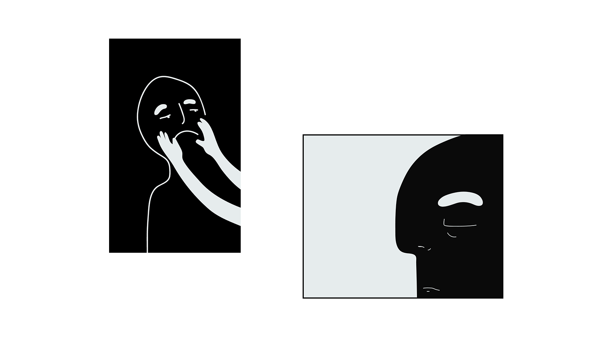
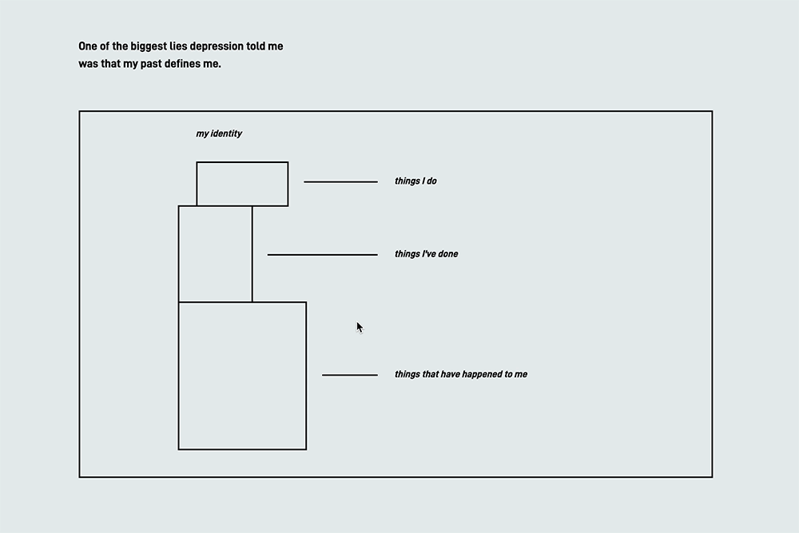
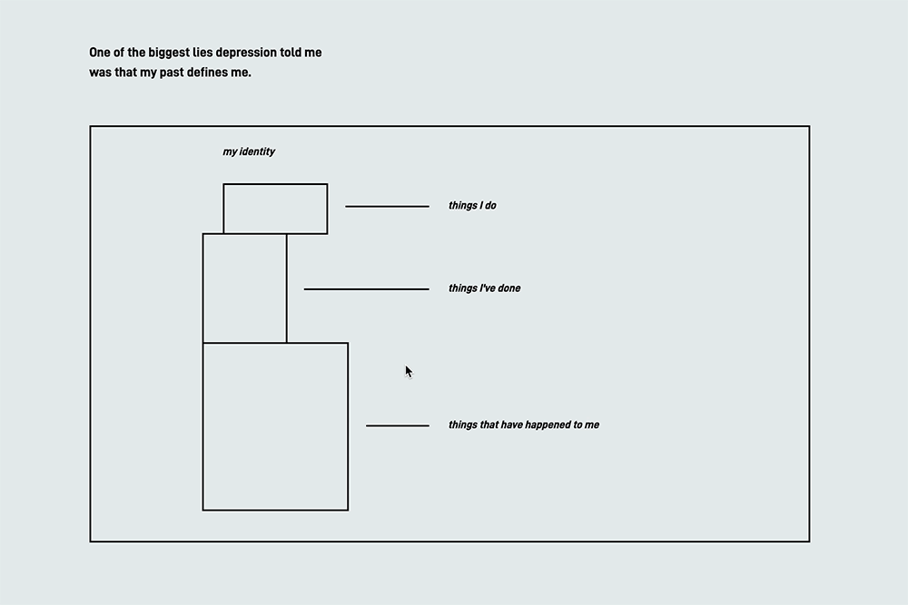
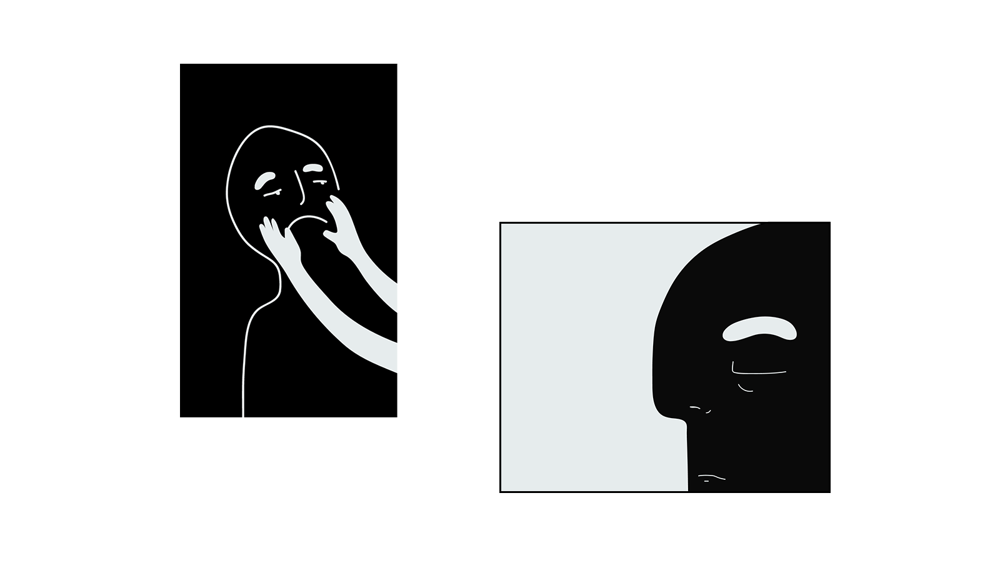
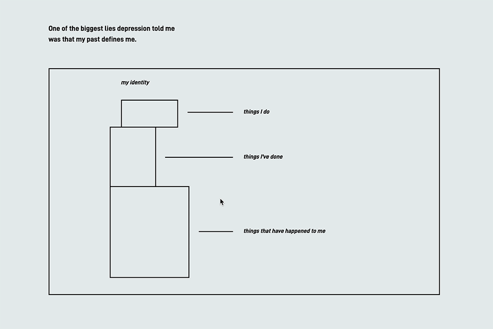

 

← I'M (NOT) OK
As creatives, I think we have a unique gift as storytellers to elevate narratives to a greater experiential level, to make quieter stories louder, to speak for people who have difficulty speaking up.There are so many individual and collective narratives out there that are suppressed, silenced or just not talked about. And one of them I’ve encountered again and again in my surrounding life is the story of mental illness. But even though depression, anxiety, PTSD, and all these conditions seem pretty common, mental illness remains an obscure and misconstrued story. And I realized one reason was because it just isn't talked about enough.
So I started asking and opening up more conversations with different people - asking them what it actually felt like to have depression, what people said ignorantly that was hurtful, what people said that was helpful, ways they took steps towards recovery. The narratives that emerged were not as hopeless and depressing as I thought a story of mental illness would be because mixed in the stories of depression, panic attacks, self-harm and body-shaming were also stories of community, vulnerability, growth in self-confidence and healing.
To experience the interactive zine, click here.

